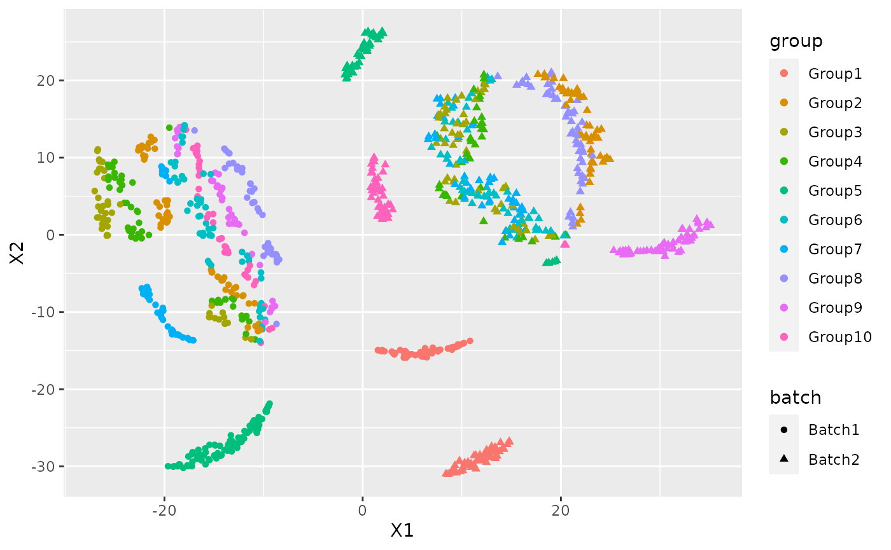
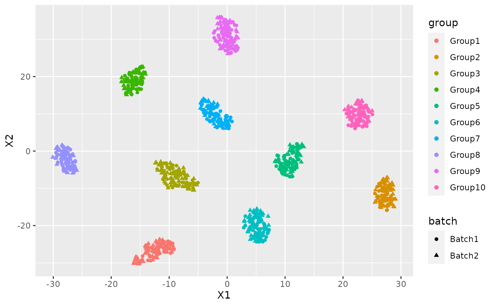
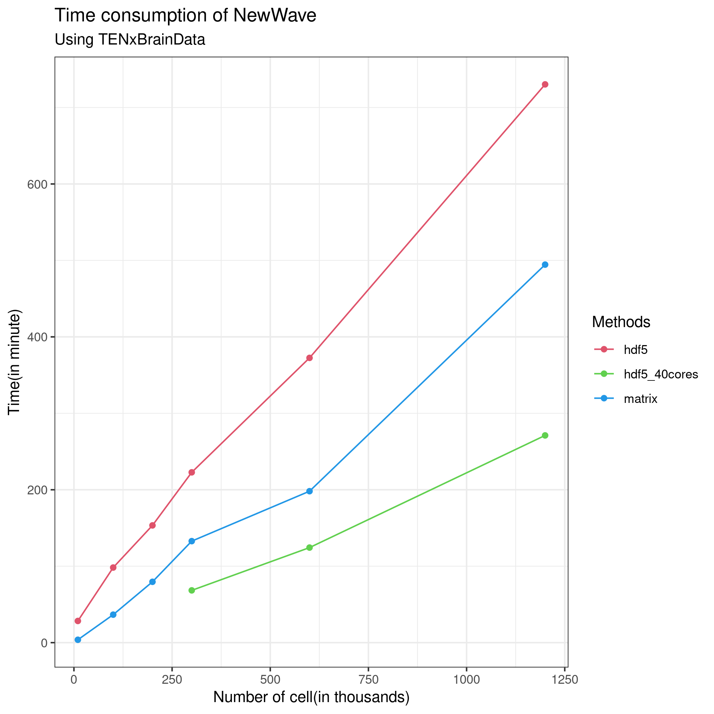
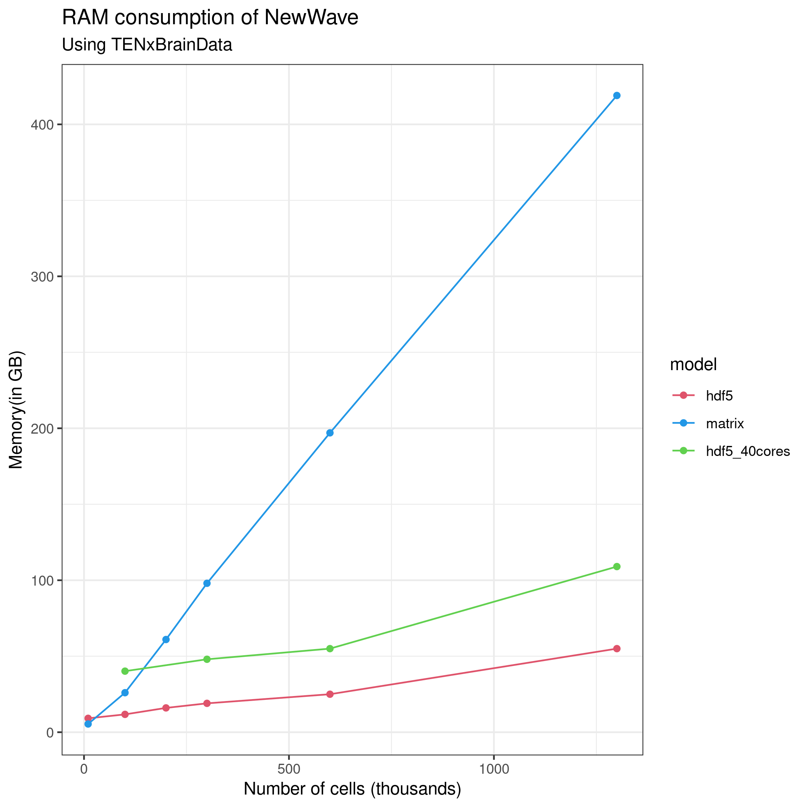

EuroBioc 2020: 14-18 December
The fast development of single cell sequencing technologies in the recent years has generated a gap between the throughput of the experiments and the capability of analizing these generated data. In this package, we implement mini-batch stochastic gradient descent and the possibility to work with HDF5 files. We decided to use a negative binomial model following the observation that droplet sequencing technologies do not induce zero inflation in the data. Thanks to these improvements and the possibility of massively parallelize the estimation process using PSOCK clusters, we are able to speed up the computation.
NewWave assumes a negative binomial distribution where the mean parameter is related to each single observation while the dispersion parameter can be equal for all observation or related to each single gene.
\[Y_{ij} \sim NB(\mu_{ij},\theta_j)\] And this is how the parameters are estimated:
\[\ln(\mu_{ij}) = \Big(X\beta + (V\gamma)^T + W\alpha \Big)_{ij} \] \[\ln(\theta_j) = \zeta_j\] These are the steps used for estimate parameters :
While the initialization is done only once at the beginnig of the process the other three steps are done iteratively till convergence.
In order to reduce the memory consumption it uses a PSOCK cluster combined with the R package SharedObject that allow to share a matrix between different cores avoiding memory duplication. Thanks to that we can massively parallelize the estimation process with huge benefit in terms of time consumption. We can reduce even more the time consumption using some mini batch approaches on the different steps of the optimization.
I am going to show how to use NewWave with example data generated with Splatter.
Splatter is a R package designed to generate single cell transcriptomic data with a high level of customization.
In our implementation we want a batch effect to be corrected, the additionals batch parameters are setted in order to create more complex batch effect.
You can think to the group as a cell type, we will use those group to test the resulted low dimensional representation through a cluster analysis.
suppressPackageStartupMessages(
{library(SingleCellExperiment)
library(splatter)
library(irlba)
library(Rtsne)
library(ggplot2)
library(mclust)
library(NewWave)
})
params <- newSplatParams()
N=1000
data <- splatSimulateGroups(params,batchCells=c(N/2,N/2),
group.prob = rep(0.1,10),
de.prob = 0.2,
batch.facLoc = 2,
batch.facScale = 1,
verbose = FALSE) The resault of splatter is a SingleCellExperiment with the generated data in the assays counts.
data## class: SingleCellExperiment
## dim: 10000 1000
## metadata(1): Params
## assays(6): BatchCellMeans BaseCellMeans ... TrueCounts counts
## rownames(10000): Gene1 Gene2 ... Gene9999 Gene10000
## rowData names(16): Gene BaseGeneMean ... DEFacGroup9 DEFacGroup10
## colnames(1000): Cell1 Cell2 ... Cell999 Cell1000
## colData names(4): Cell Batch Group ExpLibSize
## reducedDimNames(0):
## altExpNames(0):## [1] "matrix" "array"As you can see we have the number of cell that we choose(N=500) an 10 000 genes. For this workshop we will choose only the 1000 most variable genes.
hvg <- rowVars(counts(data))
names(hvg) <- rownames(counts(data))
data <- data[names(sort(hvg,decreasing=TRUE))[1:500],]In a SingleCellExperiment the colData slot contains the sample level metadata. In our situation there are two important variable, Batch and Group.
colData(data)## DataFrame with 1000 rows and 4 columns
## Cell Batch Group ExpLibSize
## <character> <character> <factor> <numeric>
## Cell1 Cell1 Batch1 Group3 79989.4
## Cell2 Cell2 Batch1 Group8 76352.5
## Cell3 Cell3 Batch1 Group1 59891.3
## Cell4 Cell4 Batch1 Group9 64570.7
## Cell5 Cell5 Batch1 Group5 39977.8
## ... ... ... ... ...
## Cell996 Cell996 Batch2 Group5 76717.9
## Cell997 Cell997 Batch2 Group1 61012.3
## Cell998 Cell998 Batch2 Group2 64196.2
## Cell999 Cell999 Batch2 Group9 61218.1
## Cell1000 Cell1000 Batch2 Group6 36110.4IMPORTANT: For batch effect removal the batch variable must be a factor
data$Batch <- as.factor(data$Batch)NewWave takes as input raw data, not normalized. So now we have all the object needed to start.
We can see the how the cells are distributed between group and batch.
pca <- prcomp_irlba(t(counts(data)),n=10)
plot_data <-data.frame(Rtsne(pca$x)$Y)
plot_data$batch <- data$Batch
plot_data$group <- data$Group
ggplot(plot_data, aes(x=X1,y=X2,col=group, shape=batch))+ geom_point()
Just for a later comparison we can see the performance of clustering on PCA low dimensional representation.
cluster <- kmeans(pca$x, 10)
adjustedRandIndex(cluster$cluster, data$Group)## [1] 0.08772784There is a clear batch effect between the cells.
Let’s try to correct it.
I am going to show different implementation and the suggested way to use them with the given hardware.
Some basic advise:
I am going to present the stadard implementation of NewWave, it uses 1 cores, it estimates a dispersion parameters equal for all observation and uses all the observation in the estimation process.
The K parameter represents the number of dimension of the latent rapresentation.
The X parameter is used to indicates which variable represent the batch effect, in the same way can be inserted other cell-related variable and if you need some gene related variable those can be inserted in V.
res <- newWave(data, X = "~Batch", K=10, verbose = TRUE)## Time of setup
## user system elapsed
## 0.004 0.008 0.286
## Time of initialization
## user system elapsed
## 0.044 0.020 0.848## Iteration 1## penalized log-likelihood = -2001663.41753907## Time of dispersion optimization
## user system elapsed
## 1.162 0.104 1.228## after optimize dispersion = -1735767.02337156## Time of right optimization
## user system elapsed
## 0.001 0.000 9.498## after right optimization= -1685254.86249742## after orthogonalization = -1685250.79137058## Time of left optimization
## user system elapsed
## 0.034 0.016 9.004## after left optimization= -1678448.79501784## after orthogonalization = -1678448.08196674## Iteration 2## penalized log-likelihood = -1678448.08196674## Time of dispersion optimization
## user system elapsed
## 1.252 0.111 1.233## after optimize dispersion = -1677149.54729069## Time of right optimization
## user system elapsed
## 0.000 0.000 9.873## after right optimization= -1676609.25968922## after orthogonalization = -1676609.19514673## Time of left optimization
## user system elapsed
## 0.028 0.020 9.634## after left optimization= -1676397.51963774## after orthogonalization = -1676397.50099854## Iteration 3## penalized log-likelihood = -1676397.50099854## Time of dispersion optimization
## user system elapsed
## 1.252 0.069 1.190## after optimize dispersion = -1676393.63238974## Time of right optimization
## user system elapsed
## 0.001 0.000 8.713## after right optimization= -1676281.5195343## after orthogonalization = -1676281.50694218## Time of left optimization
## user system elapsed
## 0.017 0.032 9.461## after left optimization= -1676206.5625409## after orthogonalization = -1676206.56163704## Iteration 4## penalized log-likelihood = -1676206.56163704## Time of dispersion optimization
## user system elapsed
## 1.244 0.064 1.177## after optimize dispersion = -1676206.40783126## Time of right optimization
## user system elapsed
## 0.000 0.000 8.083## after right optimization= -1676146.99438977## after orthogonalization = -1676146.98716552## Time of left optimization
## user system elapsed
## 0.030 0.020 9.114## after left optimization= -1676100.79366914## after orthogonalization = -1676100.79306652In order to make it faster you can increase the number of cores using children parameter:
res2 <- newWave(data,X = "~Batch", K=10, verbose = TRUE, children=2)## Time of setup
## user system elapsed
## 0.011 0.000 0.262
## Time of initialization
## user system elapsed
## 0.036 0.020 0.665## Iteration 1## penalized log-likelihood = -2001663.41780476## Time of dispersion optimization
## user system elapsed
## 1.119 0.020 1.089## after optimize dispersion = -1735767.03105259## Time of right optimization
## user system elapsed
## 0.001 0.000 10.296## after right optimization= -1685254.87585785## after orthogonalization = -1685250.80474222## Time of left optimization
## user system elapsed
## 0.024 0.028 4.425## after left optimization= -1678448.80207911## after orthogonalization = -1678448.08898301## Iteration 2## penalized log-likelihood = -1678448.08898301## Time of dispersion optimization
## user system elapsed
## 1.224 0.081 1.175## after optimize dispersion = -1677149.55758997## Time of right optimization
## user system elapsed
## 0.001 0.000 9.949## after right optimization= -1676609.27770176## after orthogonalization = -1676609.21309962## Time of left optimization
## user system elapsed
## 0.022 0.033 4.801## after left optimization= -1676397.58327209## after orthogonalization = -1676397.56465307## Iteration 3## penalized log-likelihood = -1676397.56465307## Time of dispersion optimization
## user system elapsed
## 1.210 0.076 1.156## after optimize dispersion = -1676393.69476412## Time of right optimization
## user system elapsed
## 0.000 0.000 8.445## after right optimization= -1676281.54355401## after orthogonalization = -1676281.53097076## Time of left optimization
## user system elapsed
## 0.016 0.008 4.819## after left optimization= -1676206.57440879## after orthogonalization = -1676206.57349558## Iteration 4## penalized log-likelihood = -1676206.57349558## Time of dispersion optimization
## user system elapsed
## 1.231 0.088 1.190## after optimize dispersion = -1676206.42049721## Time of right optimization
## user system elapsed
## 0.001 0.000 7.993## after right optimization= -1676146.9241508## after orthogonalization = -1676146.91690263## Time of left optimization
## user system elapsed
## 0.035 0.016 4.774## after left optimization= -1676100.67179094## after orthogonalization = -1676100.67117131If you do not have an high number of cores to run newWave this is the fastest way to run.
Each of these three steps can be accelerated using mini batch, the number of observation is settled with these parameters:
res3 <- newWave(data,X = "~Batch", verbose = TRUE,K=10, children=2,
n_gene_disp = 100, n_gene_par = 100, n_cell_par = 100)## Time of setup
## user system elapsed
## 0.011 0.000 0.267
## Time of initialization
## user system elapsed
## 0.060 0.003 0.652## Iteration 1## penalized log-likelihood = -2001663.41780781## Time of dispersion optimization
## user system elapsed
## 1.109 0.028 1.091## after optimize dispersion = -1735767.03162149## Time of right optimization
## user system elapsed
## 0.001 0.000 9.272## after right optimization= -1685254.87598813## after orthogonalization = -1685250.80486279## Time of left optimization
## user system elapsed
## 0.007 0.020 4.482## after left optimization= -1678448.79319527## after orthogonalization = -1678448.0800754## Iteration 2## penalized log-likelihood = -1678448.0800754## Time of dispersion optimization
## user system elapsed
## 0.405 0.108 0.382## after optimize dispersion = -1677149.66096346## Time of right optimization
## user system elapsed
## 0.001 0.000 1.915## after right optimization= -1677029.17006705## after orthogonalization = -1677029.1588819## Time of left optimization
## user system elapsed
## 0.008 0.013 0.500## after left optimization= -1677022.02716288## after orthogonalization = -1677022.02689714## Iteration 3## penalized log-likelihood = -1677022.02689714## Time of dispersion optimization
## user system elapsed
## 0.423 0.080 0.371## after optimize dispersion = -1677022.02689714## Time of right optimization
## user system elapsed
## 0.00 0.00 1.67## after right optimization= -1676928.60689369## after orthogonalization = -1676928.60160892## Time of left optimization
## user system elapsed
## 0.020 0.032 0.530## after left optimization= -1676918.1705264## after orthogonalization = -1676918.1702424If you have a lot of core disposable or you want to estimate a genewise dispersion parameter this is the fastest configuration:
IMPORTANT:do not use n_gene_disp in this case, it will slower the computation.
res3 <- newWave(data,X = "~Batch", verbose = TRUE,K=10, children=2,
n_gene_par = 100, n_cell_par = 100, commondispersion = FALSE)## Time of setup
## user system elapsed
## 0.011 0.000 0.253
## Time of initialization
## user system elapsed
## 0.036 0.016 0.624## Iteration 1## penalized log-likelihood = -2001663.41781173## Time of dispersion optimization
## user system elapsed
## 1.100 0.036 1.085## after optimize dispersion = -1735767.03165213## Time of right optimization
## user system elapsed
## 0.001 0.000 9.368## after right optimization= -1685254.87601986## after orthogonalization = -1685250.80489447## Time of left optimization
## user system elapsed
## 0.027 0.028 4.409## after left optimization= -1678448.7931645## after orthogonalization = -1678448.08004474## Iteration 2## penalized log-likelihood = -1678448.08004474## Time of dispersion optimization
## user system elapsed
## 0.149 0.036 0.941## after optimize dispersion = -1670819.06619626## Time of right optimization
## user system elapsed
## 0.001 0.000 2.162## after right optimization= -1670739.80160801## after orthogonalization = -1670739.79342462## Time of left optimization
## user system elapsed
## 0.009 0.012 0.558## after left optimization= -1670693.88023722## after orthogonalization = -1670693.87941408## Iteration 3## penalized log-likelihood = -1670693.87941408## Time of dispersion optimization
## user system elapsed
## 0.150 0.052 0.467## after optimize dispersion = -1670694.18948774## Time of right optimization
## user system elapsed
## 0.001 0.000 2.077## after right optimization= -1670613.09824773## after orthogonalization = -1670613.0920367## Time of left optimization
## user system elapsed
## 0.015 0.019 0.544## after left optimization= -1670565.93641903## after orthogonalization = -1670565.93578374This way will store the latent representation in the reducedDim slot.
Now I can use the latent dimension representation for visualization purpose:
latent <- reducedDim(res)
tsne_latent <- data.frame(Rtsne(latent)$Y)
tsne_latent$batch <- data$Batch
tsne_latent$group <- data$Group
ggplot(tsne_latent, aes(x=X1,y=X2,col=group, shape=batch))+ geom_point()
or for clustering:
cluster <- kmeans(latent, 10)
adjustedRandIndex(cluster$cluster, data$Group)## [1] 0.8959066if we want to obtain more information about the model we can run newFit that has exactly the same parameters
par <- newFit(data,X = "~Batch", verbose = TRUE,K=10, children=2,
n_gene_par = 100, n_cell_par = 100, commondispersion = FALSE)## Time of setup
## user system elapsed
## 0.012 0.001 0.266
## Time of initialization
## user system elapsed
## 0.049 0.004 0.638## Iteration 1## penalized log-likelihood = -2001663.41781188## Time of dispersion optimization
## user system elapsed
## 1.106 0.032 1.086## after optimize dispersion = -1735767.03162736## Time of right optimization
## user system elapsed
## 0.001 0.000 10.106## after right optimization= -1685254.87600285## after orthogonalization = -1685250.80487751## Time of left optimization
## user system elapsed
## 0.012 0.009 4.474## after left optimization= -1678448.79315724## after orthogonalization = -1678448.08003747## Iteration 2## penalized log-likelihood = -1678448.08003747## Time of dispersion optimization
## user system elapsed
## 0.159 0.056 0.963## after optimize dispersion = -1670819.06616249## Time of right optimization
## user system elapsed
## 0.001 0.000 2.284## after right optimization= -1670726.28946298## after orthogonalization = -1670726.27654499## Time of left optimization
## user system elapsed
## 0.009 0.004 0.573## after left optimization= -1670683.01785359## after orthogonalization = -1670683.0173307## Iteration 3## penalized log-likelihood = -1670683.0173307## Time of dispersion optimization
## user system elapsed
## 0.163 0.064 0.471## after optimize dispersion = -1670683.32716091## Time of right optimization
## user system elapsed
## 0.001 0.000 2.297## after right optimization= -1670606.85826533## after orthogonalization = -1670606.84833909## Time of left optimization
## user system elapsed
## 0.010 0.008 0.564## after left optimization= -1670561.82645139## after orthogonalization = -1670561.82559877The result of newFit is an object of class newmodel where are stored all the estimated parameter seen in the introduction.
#View(par)With this object we can also compute the AIC and the BIC of the model.
## [1] 3376155## [1] 3484126In this package we can find a huge single cell dataset made by 1.3 M cell and 27 K genes.
Thanks to the hdf5 format that we can use trougth the DelayedArray framework this dataset is not on our RAM but it can be read and used anyway.
suppressPackageStartupMessages(library(TENxBrainData))
tenx <- TENxBrainData()## using temporary cache /tmp/RtmpnLQcLn/BiocFileCache## snapshotDate(): 2020-12-14## see ?TENxBrainData and browseVignettes('TENxBrainData') for documentation## downloading 1 resources## retrieving 1 resource## loading from cacheLet’s see how is made this SingleCellExperiment
tenx## class: SingleCellExperiment
## dim: 27998 1306127
## metadata(0):
## assays(1): counts
## rownames: NULL
## rowData names(2): Ensembl Symbol
## colnames(1306127): AAACCTGAGATAGGAG-1 AAACCTGAGCGGCTTC-1 ...
## TTTGTCAGTTAAAGTG-133 TTTGTCATCTGAAAGA-133
## colData names(4): Barcode Sequence Library Mouse
## reducedDimNames(0):
## altExpNames(0):It has the slot counts were the date are stored exaclty how is needed by NewWave but in this case we do not have the batch effect and so we will only reduce the dimensionality of the dataset.
Despite of the huge dimension of the dataset it’s memory size is really small:
object.size(tenx)## 304126984 bytesonly 304 MB.
This is possible because the counts slot is not a matrix.
## [1] "DelayedMatrix"
## attr(,"package")
## [1] "DelayedArray"In order to manage this type of file NewWave uses a set of proper method with some strength and some weakness.
I am not going to show the exact implementation but I will explain how to use NewWave in this situation and why.
The biggest strength of using DelayedArray and HDF5 files is the reduction of the RAM consumption, the cost of that is that we read only a small piece, called chunck, of the dataset every time and so if it is done not properly in can strongly slower the computation expecially when it is applied to an iterative optimization such as the one used by NewWave.
For this reason I strongly discourage to set verbose = T, this will force NewWave to read the dataset, chunk by chunk, several time for each iteration.
In this first version of the package this implementation is really effective only when applied on big dataset, let’s say at least 30K cell.
The are some differences with the matrix implementation: * there is a small aproximation in the initialization * the estimation of the dispersion parameter is forced to be genewise
The best way to use NewWave in this case is the same we see before but I will not run this code because it would be long.
# res4 <- newWave(tenx, K=10, children=2,n_gene_par = 100, n_cell_par = 100, commondispersion = FALSE)The following figures explain the performance of NewWave in this dataset with differents approach, I have always used only the 1000 most variable genes.


## R Under development (unstable) (2020-11-02 r79396)
## Platform: x86_64-pc-linux-gnu (64-bit)
## Running under: Ubuntu 20.04.1 LTS
##
## Matrix products: default
## BLAS/LAPACK: /usr/lib/x86_64-linux-gnu/openblas-pthread/libopenblasp-r0.3.8.so
##
## locale:
## [1] LC_CTYPE=en_US.UTF-8 LC_NUMERIC=C
## [3] LC_TIME=en_US.UTF-8 LC_COLLATE=en_US.UTF-8
## [5] LC_MONETARY=en_US.UTF-8 LC_MESSAGES=C
## [7] LC_PAPER=en_US.UTF-8 LC_NAME=C
## [9] LC_ADDRESS=C LC_TELEPHONE=C
## [11] LC_MEASUREMENT=en_US.UTF-8 LC_IDENTIFICATION=C
##
## attached base packages:
## [1] parallel stats4 stats graphics grDevices utils datasets
## [8] methods base
##
## other attached packages:
## [1] TENxBrainData_1.11.0 HDF5Array_1.19.0
## [3] rhdf5_2.35.0 DelayedArray_0.17.6
## [5] NewWave_1.1.1 SharedObject_1.5.5
## [7] mclust_5.4.7 ggplot2_3.3.2
## [9] Rtsne_0.15 irlba_2.3.3
## [11] Matrix_1.2-18 splatter_1.15.1
## [13] SingleCellExperiment_1.13.3 SummarizedExperiment_1.21.1
## [15] Biobase_2.51.0 GenomicRanges_1.43.1
## [17] GenomeInfoDb_1.27.3 IRanges_2.25.5
## [19] S4Vectors_0.29.6 BiocGenerics_0.37.0
## [21] MatrixGenerics_1.3.0 matrixStats_0.57.0
##
## loaded via a namespace (and not attached):
## [1] bitops_1.0-6 fs_1.5.0
## [3] bit64_4.0.5 filelock_1.0.2
## [5] httr_1.4.2 rprojroot_2.0.2
## [7] tools_4.1.0 backports_1.2.1
## [9] R6_2.5.0 DBI_1.1.0
## [11] colorspace_2.0-0 rhdf5filters_1.3.3
## [13] withr_2.3.0 tidyselect_1.1.0
## [15] bit_4.0.4 curl_4.3
## [17] compiler_4.1.0 textshaping_0.2.1
## [19] desc_1.2.0 labeling_0.4.2
## [21] scales_1.1.1 checkmate_2.0.0
## [23] rappdirs_0.3.1 pkgdown_1.6.1
## [25] systemfonts_0.3.2 stringr_1.4.0
## [27] digest_0.6.27 rmarkdown_2.6
## [29] XVector_0.31.1 pkgconfig_2.0.3
## [31] htmltools_0.5.0 fastmap_1.0.1
## [33] dbplyr_2.0.0 rlang_0.4.9
## [35] RSQLite_2.2.1 shiny_1.5.0
## [37] farver_2.0.3 generics_0.1.0
## [39] BiocParallel_1.25.1 dplyr_1.0.2
## [41] RCurl_1.98-1.2 magrittr_2.0.1
## [43] BiocSingular_1.7.0 GenomeInfoDbData_1.2.4
## [45] Rcpp_1.0.5 munsell_0.5.0
## [47] Rhdf5lib_1.13.0 lifecycle_0.2.0
## [49] stringi_1.5.3 yaml_2.2.1
## [51] zlibbioc_1.37.0 BiocFileCache_1.15.1
## [53] AnnotationHub_2.23.0 grid_4.1.0
## [55] blob_1.2.1 promises_1.1.1
## [57] ExperimentHub_1.17.0 crayon_1.3.4
## [59] lattice_0.20-41 beachmat_2.7.3
## [61] locfit_1.5-9.4 knitr_1.30
## [63] pillar_1.4.7 glue_1.4.2
## [65] BiocVersion_3.13.1 evaluate_0.14
## [67] BiocManager_1.30.10 httpuv_1.5.4
## [69] vctrs_0.3.6 gtable_0.3.0
## [71] purrr_0.3.4 assertthat_0.2.1
## [73] xfun_0.19 mime_0.9
## [75] rsvd_1.0.3 xtable_1.8-4
## [77] later_1.1.0.1 ragg_0.4.0
## [79] tibble_3.0.4 AnnotationDbi_1.53.0
## [81] memoise_1.1.0 interactiveDisplayBase_1.29.0
## [83] ellipsis_0.3.1